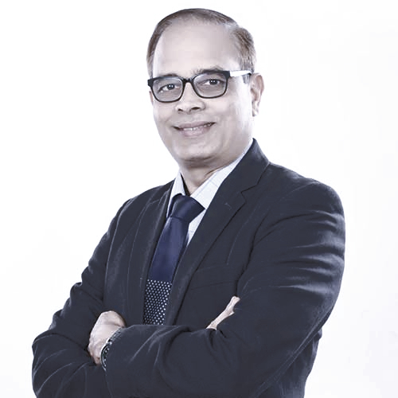
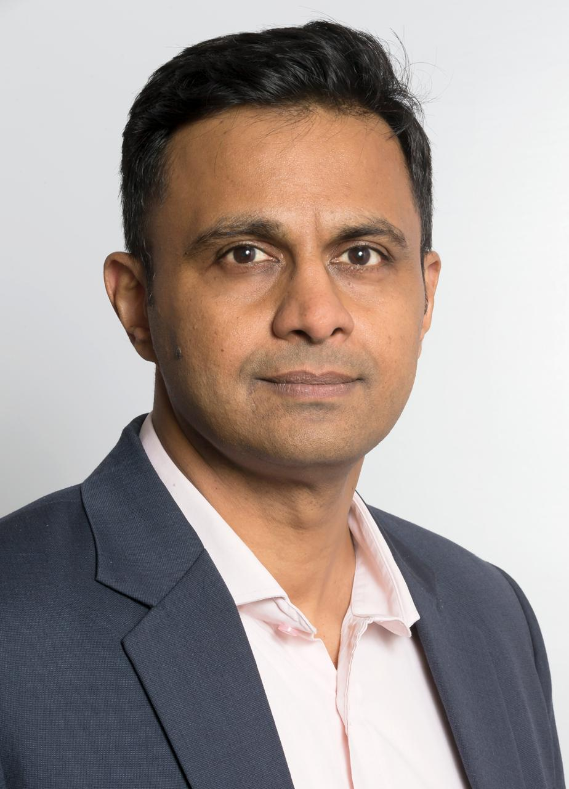
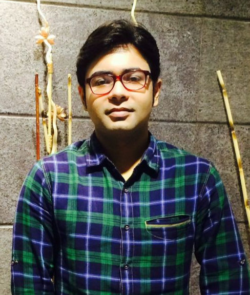
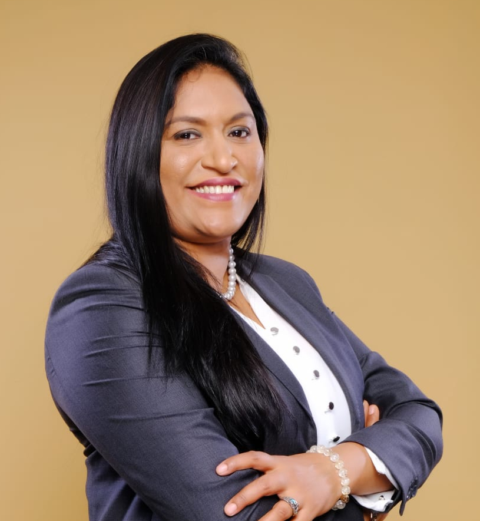

OUR TEAM
.png)
Founder
Ranga is a seasoned entrepreneur and business advisor with over 26 years of experience driving innovation and growth across diverse sectors. His journey spans across India and the United States, providing him with a global perspective on business.
Ranga possesses a strong foundation in finance and operations, having held key leadership roles at renowned organizations like Mphasis Limited and Hewlett Packard & GAP. He has a proven track record of achieving exceptional results, such as 145% growth in new sales for a staffing company and a 300% expansion while optimizing operations and cultivating a highly skilled talent pool.
Beyond his corporate experience, Ranga actively contributes to the entrepreneurial ecosystem. He has invested in and co‑founded several successful ventures, including Boundless Naturals, HRIQ, Dhi Brisk, and AnanSys Software Inc. This hands‑on experience provides him with invaluable insights into the challenges and opportunities facing start‑ups.
Ranga is passionate about mentoring and guiding aspiring entrepreneurs. He leverages his extensive knowledge in the areas of marketing & sales, supply chain management, finance operations, and strategic planning to help startups navigate their growth journeys. He also serves as a corporate mentor for a renowned university, sharing his expertise and guiding the next‑gen business leaders.
Ranga holds a double Master of Business Administration and a Bachelor’s Degree in Business, along with numerous certifications, reflecting his commitment to continuous learning and professional development.
Founder
Janhavi is an accomplished Chartered Accountant with 16 years of experience in the financial services industry. Her expertise spans a wide range of areas, including sector research, company analysis, credit analysis, and underwriting. In her previous role at DE Shaw & Co., Janhavi led underwriting efforts for a $1 billion private credit investment fund, demonstrating her strong analytical and leadership skills.
Prior to DE Shaw & Co., Janhavi worked at OakNorth, a leading Fintech company, where she played a pivotal role in developing a credit assessment platform for SMEs. This experience provided her with valuable insights into the intersection of technology and finance, enhancing her understanding of business operations and risk assessment.
As a Director at DhiBrisk, Janhavi leverages her deep expertise to provide strategic guidance to businesses as a Virtual CFO and M&A Consultant. She assists clients with financial planning and analysis, budgeting and forecasting, cash flow management, and investor relations. In the M&A space, she advises on due diligence, valuation, deal structuring, and post‑merger integration.
Janhavi’s strong analytical skills, coupled with her in‑depth understanding of business operations and financial markets, make her a valuable asset to any organization seeking to optimize its financial performance and achieve its strategic objectives.
F&A Directors

Haridasan Panniamvalli is a seasoned professional with over three decades of expertise in financial services and human resources. As a distinguished Fellow Member of the esteemed Institute of Chartered Accountants of India, Hari brings unparalleled knowledge and experience to the table.
He also has degrees from the Indian Institute of Management in Bangalore and the prestigious Global Business School IMD in Lausanne. Throughout his illustrious career, Hari has held pivotal positions such as Chief Financial Officer (CFO) for prominent companies. He has also served as trusted advisor, board member, partner of a leading professional firm, and co‑founder of SBS Global. His extensive experience and strategic acumen have cemented his reputation as a highly sought‑after business leader and visionary.
Chandan Murlidhar is a highly accomplished and seasoned professional with over 18 years of experience in finance, strategy, and operations. He has extensive experience working with the board of directors/trustees and managing strategic corporate governance issues, leading global teams, and formulating credible, effective, long-range strategies to attain overarching organizational objectives, anticipating future trends, as well as potential threats and opportunities from a myriad of business roles in senior management while at Hewlett Packard.
With a strong foundation in fiduciary responsibilities such as fiscal management, financial statements and analysis, capital asset management, and cash flow management, he successfully led complex initiatives that drove operational efficiency and strategic growth. He has consistently delivered value and achieved long-term success managing the organization’s financial health by overseeing the day-to-day fiscal operations and the long-term viability of managing the assets and financial operations. He has been a student of IIM Bangalore’s various executive management programs.
Financial & Business Advisors

Nitin is a seasoned professional with 27+ years' experience, excelling in outsourcing with stints at Hewlett Packard, Accenture, and TCS. His diverse roles span Operations, Presales, Client Management, M&A, Integration, and Centre Management.
A former Finance Controller for NCR Corporation, Nitin, a qualified Chartered Accountant, and has served as Vice President at Capgemini, heading India Business Services with a 15,000+ strong team.
Currently, he is the CEO‑Cofounder of a profitable venture, Digital Transformation Consulting Company, which successfully navigated the COVID era. His expertise lies in people development, organizational transformation, and competitive program implementation for clients like Wipro, Diageo, ITC, Alcon, Narayana Health, and All State.

Anitya Pun, a Chartered Accountant with 11 years of experience across IT, Retail, and Manufacturing sectors. She is the Finance Director at an HR Tech platform in Delhi with a US base, and has held key roles in Nippon Paints and the Aditya Birla Group.
Specialist in Business Planning, Budgeting, Financial Modeling, Controllership, Investor Relations, and Fundraising, Anitya leads a team overseeing finance functions, SaaS metrics, and global operations. She develops MIS reports, financial models for fundraising, and automates finance processes.
Anitya actively assists startups by providing financial modeling support for fundraising.
Partners

Jani Jermans, the visionary founder of an HR & Immigration company, boasts nearly two decades of unparalleled expertise in Labor and Immigration Compliance spanning 170+ countries. Her distinguished career includes pivotal roles at the British Deputy High Commission in Chennai and leadership positions in Global Immigration & HR Departments at renowned IT and FMCG firms, including First Advantage, Virtusa, IBM, Sasken, and Diageo.
She is a seasoned 20+ years professional with a proven track record, offering invaluable insights to businesses navigating the intricacies of Immigration and Global Workforce Management. Her wealth of experience positions her as a trusted authority, ensuring compliance and excellence in managing diverse international labor landscapes. Woman entrepreneur award of 2023 in HR & Legal Consultant from Great Companies.
Sakshi is an adept corporate and commercial lawyer with 15 years of experience. She specializes in guiding startups through partnership structuring, cap table management, angel financing, private securities offerings, India‑to‑U.S. re‑domestications, exits, and routine corporate governance. She has negotiated numerous international VC financings, advocating for founders' rights.
Her practice includes advising on outbound investments from India, startup restructuring, and counsel on commercial agreements, technology and IP licensing, privacy policies, terms of use, and more.
Areas of Practice: Startup Law, Angel and VC Financings, Mergers & Acquisitions, Employment Law, Workplace Policy & Handbook, Regulatory Compliance & Procedures.
Swati is a seasoned Intellectual Property (IP) expert with over 15 years of experience guiding technology companies and R&D institutions in harnessing innovation. As Co‑Founder of Lance IP, she leads a team of IP and Data Privacy lawyers delivering comprehensive IP solutions.
Her expertise spans electronics, information security, blockchain, telecommunications, AI, CNN, software, electrical distribution networks, and food preservation. She advises clients on building robust patent portfolios, protecting intangible assets, and navigating complex IP landscapes.
Prior to Lance IP, Swati worked with Infosys Technologies, Mercedes Benz R&D, ABB India, Zafco, and Samsung India Software Operations.
Areas of Practice: Strategic IP Planning & Portfolio Development, Patent Drafting & Prosecution, IP Litigation Support, Data Privacy & Cybersecurity, Technology Licensing & Commercialization, IP Training & Awareness Programs.
Padmasri is a highly accomplished Company Secretary with a robust foundation in Commerce, boasting over 16 years of distinguished experience navigating the intricate landscape of corporate and allied laws. Her expertise extends beyond domestic boundaries, encompassing a keen understanding of legal and regulatory frameworks governing companies across global jurisdictions.
A results‑driven professional, Padmasri anticipates emerging trends and proactively implements innovative solutions. Her proficiency in legal compliances is exceptional, thriving in dynamic environments and consistently delivering high‑quality work under tight deadlines.
Padmasri’s leadership qualities are further enhanced by remarkable patience and the ability to effectively manage and mentor teams.